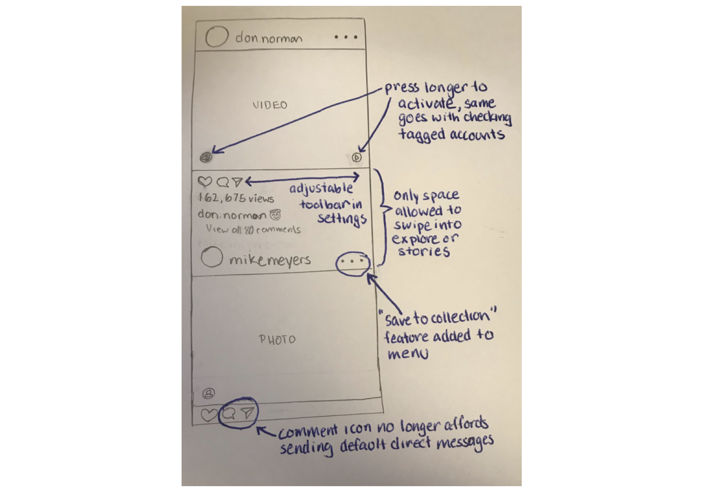
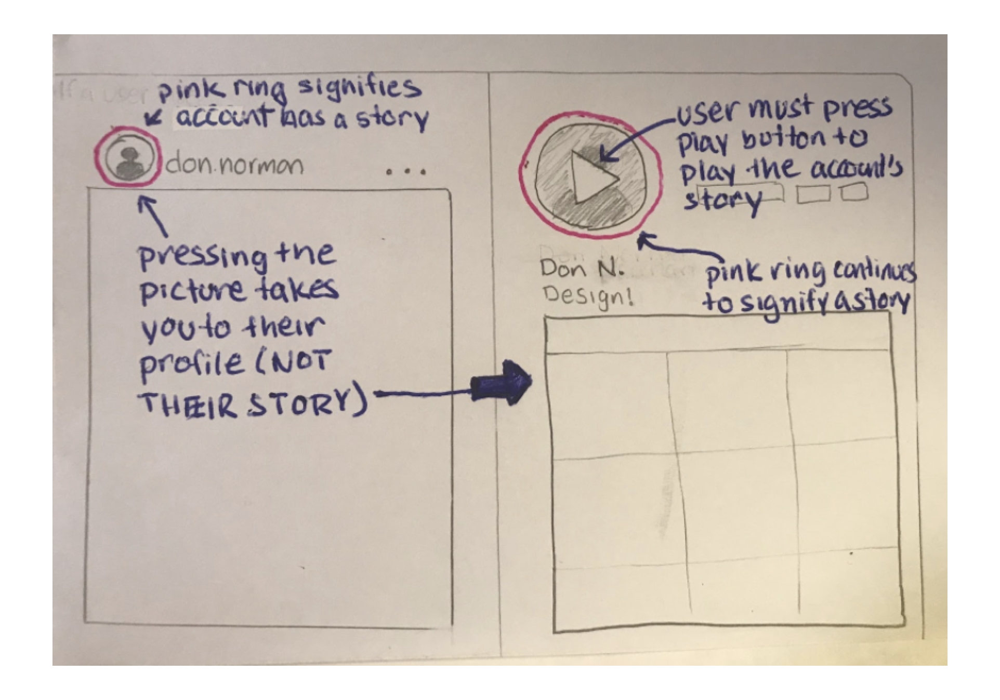

Instagram slips & mistakes
A research on how to make Instagram better.
A research on how to make Instagram better.
We chose to focus on Instagram which everyone in the group had experienced numerous errors with. We discussed what kinds of questions we should ask in our interviews and drafted those interview questions for everyone to use. We would like to spot the slips and mistakes that Instagram had and generated potential solutions for them.
A set of interview questions was devised to be used as a standard framework for each of the interviews. We
each conducted them separately across the UCSD campus. We incorporated the interview techniques we learned
before, which was the master/apprentice model. We always asked for a guided tour during the interview
process. We let the interviewee really lead the talking. Here are example questions we asked to
interviewees:
Do you use Instagram? If so, how long have you been using it?
Can you give me a guided tour of how you interact with Instagram?
Can you explain further?
Do you write your own profile section? Can you show me how to do that?
Do you like other people's post? Can you show me how to do that?
Do you watch short videos in Instagram? Can you show me how to do that?
Do you follow a mutual friend? How would you do that?
How would you comment or mention other people if applicable?
How do you like the search / explore / direct message function?
What was the last time when you open Instagram?
How do you feel about the current version of Instagram?
Our team found several major issues that users have with the usage of Instagram, which translates to the gulf
of execution, as they have difficulty finding the information they need. Our interviews also showed that
users struggle with some issues as well, and this provides evidence for a gulf of evaluation. Below
are some of the issues we found:
• Sensitivity Issues - Accidentally swiping to camera when look through a collection
For 78% users, we found that they accidentally swiped into the explore or story camera page while swiping
through photo collections or just scrolling through their feed. This is a slip since users have the
mental model that swiping through photo collections will take them to the next photo in the collection, but
after the last photo or in a particularly forceful swipe, the user swipes into the explore or story camera
page. Also, users know to just use up and down swiping motions to scroll through their feed, however a
slight diagonal scroll could send them to an unwanted page. There was a discrepancy between the conceptual
model and mental model.
• Toolbar & Function Issues - Accidentally adding to collection
We made sure to interview users who were left-handed to see the differences between right-hand focused
design and increase our design space. We saw that 32% users who scrolled with their left hand
would often slip or complained about scrolling and accidentally tapping the toolbar, liking or going to the
comment screen. Since the toolbar is aligned to the left, it is more likely for left-handed users to
accidentally press the bar while scrolling than right-handed users. On the flip side, our right-handed users
complained that they would accidentally save random posts to their collection while scrolling through their
feed as the save to collection button is the only button alighted to the right.
• Content Space Errors - Mute / Unmute Issues
We also found many errors were made in interacting with the mute / unmute in the content space. For one of
our interviewee, they made the the mistake of pressing the video post in efforts of pausing the video but
instead unmuted the video. this represents an incorrect mental model. We noticed that this was common among
users who had little to no experience with Instagram. Also, the double tap leads to the user accidentally
liking the post. This is a slip as users have the correct mental model. This was the most common slip that
80% users have experienced.
In order to mitigate the errors we found, one of the redesigns would add a play / pause button in the bottom right corner, change the mute / unmute to only affect the post that is being interacted with. We require a long press on any buttons within the content space. This way our redesign would add back the play / pause feature to reduce occurrences of trying to play / pause something but liking or muting it instead. By incorporating long press on buttons, our redesign would reduce accidental double tap likes. The tradeoffs of this redesign would be a more cluttered content space and possible inconvenience of having to long press on buttons.
Our redesign also attempted to reduce sensitivity errors. We noticed that 15 out of 19 users experienced unintentionally swiping into the explore or camera page of the app while swiping through posts with multiple photos. In order to reduce the occurrence of this slip, our redesign only allows the user to switch between pages within the white spaces between posts. By taking away the affordance of switching between pages while interacting with a post, accidental switches would no longer occur while interacting with a post. The tradeoffs of this feature would be having to scroll to the white space between posts in order to switch pages.

Another part of our redesign mitigates the mistake of tapping a profile picture and being taken to the user’s story instead of their profile. Our redesign keeps the signifier of whether someone currently has a story or not with the pink ring around their profile picture but tapping the profile picture would irregardless take you to the profile page. The profile picture in the profile page would have also have the ring signifier along with a play button signifier on top of the picture to indicate that tapping the profile picture then would lead you to that user’s story. This would coincide with a user’s mental model that tapping a profile picture while in the feed will always take them to the profile page. The tradeoffs of this redesign would be having to open the menu to save anything to collections, no longer being able to direct message someone from comments, and having to take one more step to watch someone’s story from the feed.

Given more time and resources to approach this design problem. we would like to strengthen our redesign by funding the research to create clickable prototype for user testings. This project really helped me channel my empathy, and focus on how to improve the experience and accessibility for a wide range of users. Resigning Instagram may seem like a trivial contribution, but given the vast amount of users, honing on this small change can act as an impactful catalyst towards combatting the universal issue of bad user experience.
Made with by Yutong